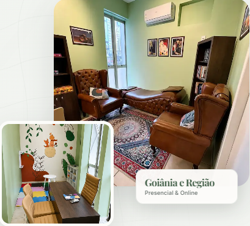

Psicólogo clínico
e avaliação neuropsicológica
Escuta acolhedora e um olhar cuidadoso para a história, o comportamento, a aprendizagem e o desenvolvimento de cada pessoa.
Registro ativo
Algo não está bem.
Você consegue identificar o quê?
Alguns sinais indicam que pode ser hora de buscar apoio — seja uma avaliação neuropsicológica para entender atenção, memória, aprendizagem e comportamento, seja um espaço de psicoterapia para elaborar o que você sente.
Avaliação Neuropsicológica
Você, seu filho ou alguém da sua família apresenta alguns destes sinais?
- Dificuldade de manter atenção e foco
- Suspeita de TDAH ou TEA/autismo
- Dificuldades de aprendizagem, leitura ou escrita
- Esquecimentos frequentes e desorganização
- Comportamento impulsivo ou desregulado
- Queda no desempenho escolar, acadêmico ou profissional
Psicoterapia
Você sente que algo não está bem, mas não sabe nomear?
- Ansiedade ou preocupação constante
- Tristeza ou desânimo sem causa clara
- Dificuldade nos relacionamentos
- Sensação de sobrecarga emocional
- Padrões que se repetem e você não entende por quê
- Vontade de se conhecer melhor
O que a avaliação neuropsicológica ajuda a compreender
Cada pessoa chega com uma história diferente. A avaliação mapeia com precisão o que está acontecendo — e indica o melhor caminho a seguir.
👱 Em crianças e adolescentes
- Dificuldades de aprendizagem e leitura
- Atenção, memória e concentração
- Desenvolvimento da linguagem
- Comportamento e regulação emocional
- Suspeita de TDAH, TEA ou dislexia
🧑 Em adultos
- Memória e lapsos frequentes
- Dificuldade de foco e organização
- Planejamento e funções executivas
- Regulação emocional e impulsividade
- Queda no desempenho profissional
🔍 Suspeitas diagnósticas
- TDAH (Transtorno de Déficit de Atenção)
- TEA (Transtorno do Espectro Autista)
- Dislexia e outros transtornos de leitura
- Ansiedade de origem cognitiva
- Outras condições cognitivas e emocionais
Como funciona a
avaliação neuropsicológica
Um processo claro, humano e individualizado — do primeiro contato até a devolutiva.
Conversa inicial
Antes de qualquer teste, há uma escuta. Entendemos o histórico, as queixas e o que está preocupando — sem julgamentos e com total sigilo.
Sessões de avaliação
Aplicação de testes neuropsicológicos validados, em ambiente acolhedor. O número de sessões varia conforme a demanda — geralmente entre 8 e 10 encontros, conforme cada caso.
Análise e laudo
Os resultados são analisados com rigor técnico e compilados em um laudo detalhado — com análise dos achados, perfil cognitivo, hipóteses clínicas quando aplicável e orientações concretas.
Devolutiva humanizada
Reunião dedicada para explicar tudo com clareza: o que os resultados significam, o que fazer a partir daqui e quais caminhos podem ser considerados após a avaliação.
Sobre Guilherme Bueno
Cada pessoa carrega uma história única. O atendimento começa pela escuta dessa história.
Guilherme Bueno é psicólogo clínico, com atendimento voltado para crianças, adolescentes e adultos. Realiza atendimentos presenciais no Setor Oeste, em Goiânia, e também na modalidade online.
01. Abordagem clínica
Sua prática é orientada pela psicanálise, uma abordagem que valoriza a escuta singular, o tempo de cada pessoa e os sentidos construídos. É membro do Corpo Freudiano — Seção Goiânia.
02. Avaliação neuropsicológica
Investiga atenção, memória, aprendizagem, comportamento e desenvolvimento. Está em formação em Neuropsicologia pela PUC Goiás.
03. Trajetória
Possui 18 anos de experiência como professor, contribuindo para um olhar cuidadoso sobre infância, aprendizagem e desenvolvimento humano.
Psicologia clínica, psicanálise e avaliação.
Um olhar cuidadoso para a história, o desenvolvimento e as singularidades de cada pessoa.
Registro profissional
Atendimento psicológico
Escuta analítica
Dúvidas sobre
psicoterapia e avaliação
Algumas dúvidas ajudam a entender melhor as diferenças entre psicoterapia, avaliação neuropsicológica e o caminho mais adequado para cada demanda.
Cada caso tem sua história
O primeiro contato ajuda a compreender melhor a demanda e entender se o caminho mais indicado é a psicoterapia, a avaliação neuropsicológica ou outra orientação inicial.
Vamos conversar sobre
o que você precisa?
O primeiro contato ajuda a entender a demanda e orientar o melhor caminho: psicoterapia, avaliação neuropsicológica ou uma conversa inicial sobre os próximos passos.
Atendimento presencial
Consultório localizado no Setor Oeste, em Goiânia, com atendimento para crianças, adolescentes e adultos.
Atendimento online
Modalidade online disponível para acompanhamento psicológico, conforme a necessidade e a possibilidade de cada caso.
Agendamento pelo WhatsApp
Envie uma mensagem para falar sobre sua demanda e verificar a melhor forma de atendimento.

Localização do consultório
Atendimento presencial no Setor Oeste, em Goiânia. Veja a localização pelo Google Maps.